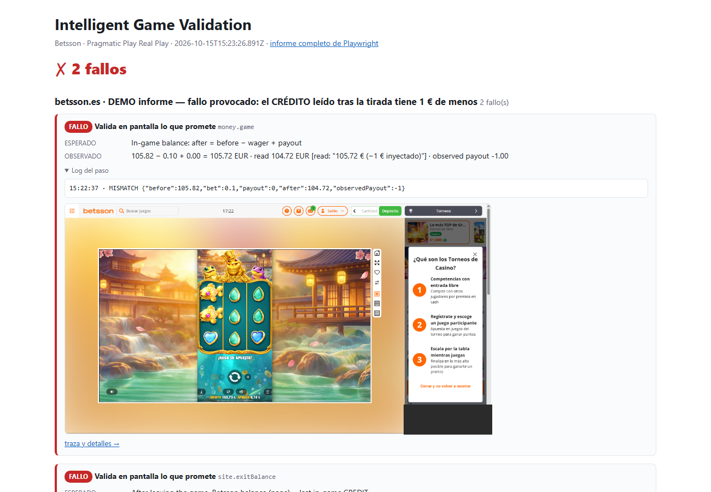

Informe 5 — Cómo se ve un fallo: demo de informe con un error provocado
Resultado: ✗ 2 fallos, provocados a propósito · ejecución real del 15/10/2026 (15:21–15:23, 2,1 min) · npm run report:demo (también es la última parte de npm run all, marcada como «fallo provocado, ESPERADO»).
Qué hace
- El recorrido es real: login, juego, sesión y una tirada a 0,10 € (CRÉDITO 105,82 → 105,72 €).
- Después, el CRÉDITO leído se altera en −1 € (104,72 €), como si el OCR hubiera leído mal. Una fila del informe lo declara: «FALLO PROVOCADO A PROPÓSITO».
- Con ese valor fallan las dos comprobaciones que deben detectarlo:
| Comprobación | Esperado | Observado | Resultado |
|---|---|---|---|
money.game: regla del saldo en el juego | 105,82 − 0,10 + 0,00 = 105,72 € | «leído» 104,72 € (−1 € inyectado) | ✗ |
site.exitBalance: juego frente al saldo de Betsson en la página (DOM) | iguales | juego 104,72 € · página 105,72 € (releído 16 veces durante ~30 s) | ✗ |
El informe del fallo
Cada fallo es una tarjeta con esperado, observado, el log del paso y la captura real. En la captura se lee el CRÉDITO verdadero (105,72 €), así que se ve a simple vista que la pantalla dice una cosa y el valor usado otra. Los aciertos no ocupan sitio: solo se cuentan.

En la captura se ha tapado el ranking de torneos de la web (apodos de otros jugadores).
Por qué está en el proyecto
- Demuestra que las comprobaciones detectan un error real de lectura, no solo que pasan cuando todo va bien.
- Enseña el formato del informe: solo los fallos, con su captura y el porqué (los aciertos se cuentan).
- Está aislada: tiene su propio proyecto (
report-demo-betsson.es) y ennpm run allsu fallo no cuenta como error.
Intelligent Game Validation · Betsson × Malackathon 2026 · generado desde docs/reports/*.md (npm run reports:html)